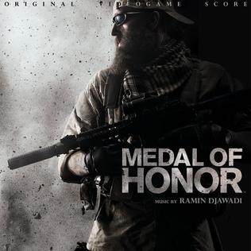

DreamWorks Interaktive
A DreamWorks Interactive egy videojáték-fejlesztő és -kiadó, amely 1995. március 22-én alakult a DreamWorks SKG
és a Microsoft közös vállalkozásaként. A stúdiót Steven Spielberg vezette, és számos címet adott ki különféle
licencelt ingatlanok alapján. 1999-ben a stúdió a Medal Of Honor "first person shooter" videojátékkal érte el
a legsikeresebb kiadást.
